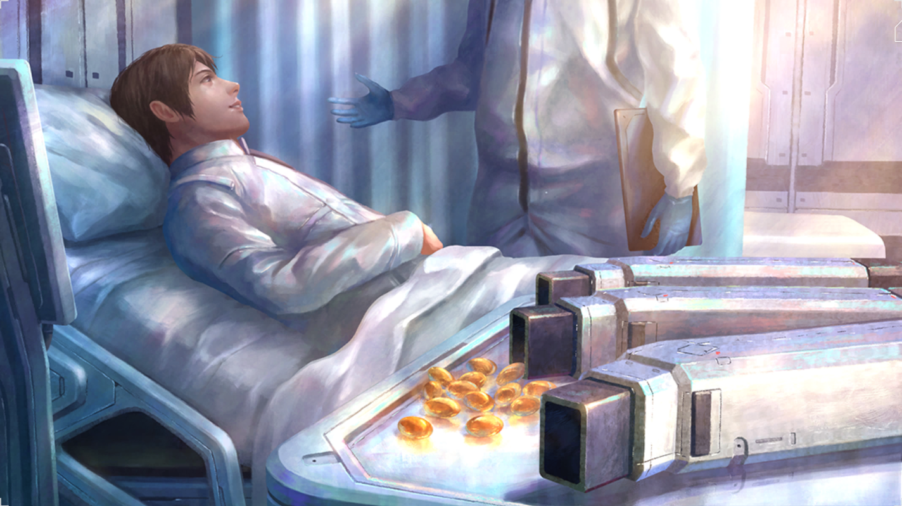

123 years after the Tears of the New Moon, Blueschist Density suddenly and unexpectedly spiked in the lowest level of Amasia. The Great Shield collapsed immediately afterward, along with the foundations of Amasia itself. In the pandemonium that followed, many people were swallowed up by something consisting of Blueschist, and less than half of the population were able to escape. This collapse nearly wiped out the heads of the Amasian government, making subsequent relief efforts and further investigation into the cause of this phenomenon difficult to execute.
An Ender Is Discovered
An Ender is discovered
AD: [Manual Entry]
The people realized during this period that, for one reason or another, the blue rain would only affect humans. Animals and vegetation continued to thrive under the rain, in regions now devoid of human life. One day, humans foraging in the early afternoon came under assault by a gigantic creature. Fleeing in fear, one forager recalled its appearance clearly: the sharp fangs, rending claws and bluish-black body. This would come to be Known as an Ender"one that ended the world, whose existence heralded Armageddon itself. And thus, the surface world was no longer safe in any weather.
An Ender Is Repelled For The First Time
An Ender is repelled for the first time
AD: [Manual Entry]
Finally, after losing many lives in the process, humanity eventually succeeded in repelling a small Ender. Enders cores were discovered to be weak points, allowing the development of Cradles with weapons effective against them. Ender-related damage and injuries dropped significantly, and the scope of exploration expanded further into the outside world. This would lead to encounters with even more powerful Enders; nevertheless, it was an important step for humanity.
Announcement Of Governmental Policy Post-Establishment Of Amasia
Announcement of governmental policy post- establishment of Amasia
AD: [Manual Entry]
Once the Enders dwelling in the vertical shaft were defeated and construction on the Great Shield had started, the governmental policy for the period after establishment of the city was announced. While it expressed hope for the development of the city and humanity, it also announced a strict set of guidelines for becoming a resident, leading a minority of those on the surface who had been friendly toward the project to now turn against it. Certain items were objected to most strongly: Management of the population with birth control and the Terminal Union Obligation to suppress emotions using E-Supplements Division of living area based on profession Most of those who turned against the administration departed the plan and returned to their original settlements, but this also served to intensify the labor movement while radicalizing a small segment of the rebels, turning them into guerillas. This can be considered one of the primary factors in the delay of the construction of Amasia.
Related Artifact | Terminal Union Matrix Diagram
Completion Of Blueschist Shield Technology
Completion of Blueschist Shield Technology
AD: [Manual Entry]
The AO Waves emitted by AO Crystals could pass through almost all matter and would attract Enders, meaning research into shutting AO Waves out had always been a priority. It was during this year that reflective optical paint was finally developed, capable of deflecting 99.997% of AO Waves once hardened. This made interior storage of AO far easier, while also allowing for the installation of AO engines in Cradles.
Related Artifact | Shield Paint Can

Development Of E-Supplements
Development of E- Supplements
AD: [Manual Entry]
Scientific research had been proceeding apace, still far behind enjoyed prior to the fall of civilization, but greatly aided by the fortuitous discovery of remnants of old computers. _ lt Was during this year that one of the products of this, Al created specifically for research purposes, produced the chemical blueprint for E-Supplements. These were initially stated as being just to help people get through the hard times prior to the completion of Amasia. Trials were conducted on volunteer researchers and criminals, and,after an apparent lack of severe side effects was confirmed, they were then mainly prescribed to the construction workers.
Related Artifact | Metal Supplement Case
Ernesto Morado Becomes President Of Amasia
Ernesto Morado becomes president of Amasia
AD: [Manual Entry]
Ernesto Morado was elected the president of Amasia. An intense apathy toward government matters was shared among all strata of Amasian citizenry. Even so, the office of the president carries much authority. Ernesto bested the Anti-Amasia Organization opposition in every facet of his campaign. At the same time, he doubled financial contributions to the organization, fanning the flames of hostility. All for the sake of Ernestos ultimate goal...
Related Artifact | R statue
Evacuation To Underground Facilities Begins
Evacuation to underground facilities begins
AD: [Manual Entry]
Miraculously avoiding the floods after the Tears of the New Moon, as well as the resulting Mosaic Disease, survivors slowly began to gather at facilities in each region. Most of these facilities had limited resources, however, and the resulting scramble for food led to a number of tragic incidents. At the same time, a lucky few groups managed to arrive at operable vegetation production plants, allowing them to become self- sufficient.
Related Artifact | Harvesting Arm
Experimental Ao Crystal Melting Furnace Completed
Experimental AO Crystal melting furnace completed
AD: [Manual Entry]
A joint venture between the surface and former Amasia researchers led to the development of technology that melts fragmented AO Crystals in a high-temperature, high-pressure environment to extract energy. This would allow the use of AO Crystals even without the high-performance Amasian Magus. Even so, the sheer size and intricate structure of the AO Crystal melting furnace meant that it could only be utilized at surface settlement Nests of a certain scale.
Related Artifact | Mockup
Exploration Of The Outside World Begins
Exploration of the outside world begins
AD: [Manual Entry]
Even in evacuation zones and places blessed with rainfall, stores of water and food were scarce. Only scant amounts of spring water were drinkable, as consuming the rain itself was totally out of the question. Despite fear of the blue rain, people were compelled to venture into the outside world for sustenance. As far as they could see from indoors, the blue rain that had been lethal to humans seemed to have no effect on the flora and fauna. Without a weather forecast system, groups would manufacture hermetically-sealed wheeled vehicles from the relative safety of the shelters, in the hopes of protecting themselves from the rapidly increasing spells of heavy rainfall.
Related Artifact | Tank Parts
First Magus Lot Completed
First Magus lot completed
AD: [Manual Entry]
An initial lot of two Magus were completed and sent into trial operation. Development also finished on the CRADLECOFFINs, and pilot training commenced between man and machine human and Magus. Two Magus and two CRADLECOFFINs were created in this lot. The Magus themselves demonstrated humanlike emotions far beyond those observed in the prototype, and garnered high expectations as the future friends of humanity. Despite very brief contact with individuals outside of combat training, they were able to deepen engagement with several humans. Even so, such output was nothing but the result of quantum calculation. Their quantum computers had undergone compulsory miniaturization in the initial lot, putting a tremendous strain on the Magus bodies that resulted in malfunctions in an extremely short period of time. They were deemed impossible to repair, and stored away for safekeeping.
Historical Compilation Team Established
Historical compilation team established
AD: [Manual Entry]
Ten years after the collapse of Amasia The former citizens of Old Amasia have completed their relocation to the surface. Those who were settled into their Nests were provided with the opportunity to reflect upon the past. At the behest of the Amasian Nest Organization, the "Historical Compilation Society" initiative was founded. The society's stated mission was to collect what little remained after Amasia's collapseCCTV footage, documents, etc.so that the historical legacy of Amasia would not be buried under the rubble as well. Every creed of Drifter, no matter their spotted past or criminal record, was welcome to join the effort, and their efforts were well compensated. Any recovered material was collected and organized at the headquarters for the Historical Compilation Society, and thorough analyses were conducted in order to shed light upon long-lost truths.
Related Artifact | Terminal
Mass Production Of General-Purpose Magus
Mass production of general- purpose Magus
AD: [Manual Entry]
Some new surface bases proceeded to industrialize, and succeeded in the mass production of general-purpose Magus. The human-like elements that manifested in prior Magus models such as psychological singularitywere not prioritized; instead, internal and external durability were emphasized, in order to reduce the need for maintenance. This turned them into beings far removed from humans, in both mind and body. As a result, there was deep-seated criticism of the general-purpose Magus, since they lacked the friends of humanity" aspect present in the first several Magus lots. Even so, some extolled their virtues as the perfect partners, specifically due to this disparity from humans. The matter is still up for debate to this very day.
Related Artifact | GeneralPurpose Magus Schematic Data Media
Publication Of Thesis On Raintight
Publication of thesis on Raintight
AD: [Manual Entry]
A thesis predicting the existence in human blood of a substance called Raintight, capable of resisting Blueschist, was published on the Amasia Research Information Network. It was posted by Dothan, who was just 16 at the time. The thesis was quickly and decisively dismissed by the scientific community as delusional nonsense, with Dothan opening himself up to harsh and ongoing criticism.
Related Artifact | Theses
Raintight Serum Completed
Raintight serum completed
AD: [Manual Entry]
After the collapse of Amasia, the Raintight serum was created by a medical research team led by Dr. Dothan Kuze and then distributed by the government. Wide-scale production began immediately in a former Amasian research facility on the surface. Administration of the serum began at several sites, and people lined up in droves at each location in the hopes of getting an early dose. Moreover, the personal data of the gene's provider is still completely unknown.
Related Artifact | Injection Sticker
Research Begins On Androids And Personality-driven Al
Research begins on androids and personality-driven Al
AD: [Manual Entry]
Five years since the founding of the city, and the citizens of Amasia Were overflowing with creativity, even developing products and technology that didn't exist at the end of the 21st century. Or maybe they were just lonely. This was the period when work began on autonomous androids, intended for such purposes as cleaning and cooking. The Al used internally in these androids and the organic materials used for their exterior appearance rapidly came to mimic humans, almost as though seeking to create the friends of humanity."
Start Of Full Immigration To Amasia
Start of full immigration to Amasia
AD: [Manual Entry]
With the completion of the Great Shield, a base for Drifters was also established inside the vertical shaft and the surrounding region was quickly stabilized. Dorms for the construction workers were also created inside the shaft and subsequent work proceeded quickly. When around 80% of the construction work on the Amasia residential districts had been completed, immigration to the new city began in earnest.
Stricter New Administrative Policy
Stricter new administrative policy
AD: [Manual Entry]
The use of AO energy now had to be controlled, and the Amasian government announced a new policy to that effect. Occupations providing important services were given energy priority, supplies of materials were curtailed, and harsh population control measures were placed on the residents within Amasia. Many of those pushed too far by these changes abandoned the government's system and set up slums in the lowest level of Amasia. Others chose to return to a life on the surface.
The Drifters Are-established
The Drifters are-established
AD: [Manual Entry]
Those exploring the outside world while fending off Enders had become essential for gathering resources and information from their surroundings, and were thus highly valued in several sheltered regions. The people would start calling them "Drifters"a term of respect for these valiant vagabonds willing and able to explore long distances. The first Drifters faced overwhelming danger due to the thin plating and lack of Magus support in their Cradles; the chances of them returning safely were below 70%.
Related Artifact | Early Cradle Part
The Tears Of The New Moon Occurs
The Tears of the New Moon occurs
AD: [Manual Entry]
2099, the evening of a new moon... An intense storm began brewing in a vast area centered around the Mediterranean Sea. Heavy rain also began falling on inland areas that had seen little rain up to that pointincluding the area where Amasia would eventually be built. Over the next two days, the rain continued to spread and churn; the people looked to the skies with unease, shielding their eyes from the downpour. Before long, the rain turned blue, and those who touched this tainted deluge met an ignoble end. The floods spread across the world faster than the warnings could, wiping out 92% of the population in the first week. Most information regarding the final throes of this world has been lost. G a % 8 6 ~
The Yoshio Boom
The Yoshio Boom
AD: [Manual Entry]
> After the educational show Yoshio was unceremoniously cancelled years prior, businesses were left with excess inventory of stuffed toys of the protagonist. Subsequently, the toys were distributed to childrens institutions and slums for free. Worn from the rough handling of children and attempts to patch them up, they were discovered by a designer who turned them into illustrations and posted them on Amasias local online network. Cute despite its unsettling appearance, its unstable character, and its sorrowful air, the new mascot was a particular hit with downtrodden young women and became the subject of unauthorized merchandise.
Related Artifact | y Stuffed Toy u
Use Of Ao Crystal To Produce Energy Becomes Possible
Use of AO Crystal to produce energy becomes possible
AD: [Manual Entry]
. Drifters often reported seeing Enders in close proximity to AO Crystals, and it was determined that the Enders absorb some kind of energy from the crystals. This discovery launched research projects aiming to harness that energy. A few years later, the technology was created to turn these AO Waves emitted by the crystals into electrical energy. This led to a full- scale operation to harvest as many AO Crystals as possible, as a new source of energy. This in turn had the effect of preventing massive AO Crystals from forming, and of preventing the formation of the Giga Structures that form around them.
Related Artifact | AO Engine Prototype
Amasia Coat Of Arms
Amasia Coat of Arms
AD: XXXX
A metal badge featuring the Amasia Coat of Arms, created for the Amasia Construction Declaration Ceremony. The reverse triangle motif is thought to be a reference to the mineshaft that was the site for the construction work, or perhaps an upside-down letter "A"—with the poor information management prior to Amasia's completion, the truth of the design is lost to history. The V verification panel on the neck of the Magus is designed with respect to the Coat of Arms.
Related Timeline | United Subterranean Metropolis Amasia Prog
Ao Crystal Sample
AO Crystal Sample
AD: XXXX
Small AO Crystals which had already lost their luster and broken into fragments, sealed in photo-cured resin for safekeeping. Hardly any light reaches the AO Crystals within, as a light-absorbing resin was chosen to prevent them from reactivating. Still, several researchers have spoken of this specimen glowing faintly orange in the reference room late at night.
Related Timeline | AO Crystals are discovered
Ao Engine Prototype
AO Engine Prototype
AD: XXXX
A prototype model of an AO engine, the power source for Cradles and CRADLECOFFINs. The cracked and charred parts suggest it overheated and exploded—or was perhaps detonated intentionally for testing purposes. AO engines liquefy AO Crystals to extract energy from the crystal lattices, differentiating them from Enders who absorb their AO waves instead. Although this prototype demonstrates the technological limitations present 13 years after the world's collapse, the basic design has remained the same for several centuries. The AO engine allows for direct processing of AO Crystals, and thus is employed as a universal power source.
Related Timeline | Use of AO Crystal to produce energy becom
Beer Tankard
Beer Tankard
AD: XXXX
A beer tankard with a thick glass, found in a slum in the Lower-Class Ward. Food, clothing, shelter, and other daily necessities were all strictly regulated in Amasia. Bars were illegal, but the Amasian government turned a blind eye to those that Drifters frequented. The government must have believed that Drifters should be given special treatment for their critical services in collecting AO Crystals.
Blueschist Polluted Skeleton
Blueschist Polluted Skeleton
AD: XXXX
The Blueschist found within the blue rains has a heavy toll on the environment. It has no effect on flora and fauna, apart from changing foliage coloring, but if humans come into contact with it, they develop what's known as Mosaic Disease. Blueschist clings to the skin, and within a short period of time, it can invade muscle and nerve tissue, causing fatal disorders within the human body. This is a sample specimen where the Blueschist has made it all the way to the bone.
Related Timeline | Second Giga Structure survey
Chopsticks
Chopsticks
AD: XXXX
Chopsticks are implements for eating involving the use of two sticks that taper down toward one end. They are coated with a lacquer derived from plant resin, allowing for long-term use. It is presumed that the thicker end was held using a grip similar to that of holding a pen, and then the two tips were pinched together to collect food and carry it to the mouth. There were also apparently longer versions used primarily in the preparation of food, with mention made of them in the sushi and sukiyaki recipes carried back from the east by long- distance expeditions.
Related Timeline | Sushi and sukiyaki become popular
Collection Of Paper Theses
Collection of Paper Theses
AD: XXXX
A collection of theses presumed to have been privately printed out onto paper by an Amasian researcher. While paper is a precious resource, its ability to spark inspiration cannot be denied. As such, top-level researchers are given an allotment of a certain number of sheets for the printing of data. All of the theses gathered here were penned by Dothan during his teens, and the title page reads "Collection of Early Theses by Dr. Dothan." It seems he has at least one big fan among the researchers.
Related Timeline | Publication of thesis on Raintight
Commemorative Plate(polluted)
Commemorative Plate (Polluted)
AD: XXXX
A plate made from a special metal, now almost impossible to read due to Blueschist corrosion. Eerily enough, the one part of the engraving that is still legible, where Blueschist appears to have pooled by sheer coincidence, is "2099 - New Moon."
Decorative Plant
Decorative Plant
AD: XXXX
A small potted plant. After research proved that plants were vital to enclosed environments such as Amasia, the president placed many ornamental plants in the Upper-Class Wards in the early stages. Due to that, they are now a regular sight.
Drifter License
Drifter License
AD: XXXX
A card that provides proof of being a Drifter. Its function is normally served by data carried in a personal terminal, making the issuing of a card such as this one an exception, rather than the norm. The card features the same data as the digital version: the Drifter's name, ID photo, and their combat history. The likelihood of a Drifter surviving for just 1 year during the period this particular license was issued was less than 50%, due to there not yet being any Magus or CRADLECOFFINs. To the citizens of Amasia, living in safety underground, it was almost unthinkable that anyone would sign up for such a job.
Related Timeline | Beginning of AO Crystal gathering operations
Early Cradle Part
Early Cradle Part
AD: XXXX
Hand and leg part thought to have been used in early Cradle development. Most Cradle materials were gathered from legacies of the past, but this rare part was produced specifically for use in Cradles. The curved surfaces were forged by a metalwork craftsman, using data computed by a small scientific calculator. The beautiful traces of hammer work speak of the craftsman's precision. One can only imagine how much of the world this Cradle has seen—or how many lives it has saved.
Related Timeline | The Drifters are established
Ernesto Election Statue
Ernesto Election Statue
AD: XXXX
A bust of President Ernesto. The one recovered here is made of metal and around twenty centimeters tall, but many types were made, from life-size down to figures two centimeters tall. The pedestal has a cover which, when removed, reveals a hollow inside the bust. Inside was a memo written on paper, an incredibly valuable commodity in Amasia. It must have been inserted by the bust's previous Owner, presumably an upper-class citizen. The memo reads: "The facade: a stern smile. What could be lying underneath?"
Related Timeline | Ernesto Morado becomes president of Amas
Excavator Prototype
Excavator Prototype
AD: XXXX
In order to collect AO crystals while dodging the threat of Enders, the Drifters needed a way to rapidly mine AO Crystals. The excavator was devised for this purpose. This is the initial prototype of the excavator during its development phase. Over time, the output was increased and the form factor reduced until a two-in-one model with an integrated arm manipulator was ultimately adopted.
Related Timeline | Realization of AO Crystal as energy source
Food Printer
Food Printer
AD: XXXX
In Amasia, vegetables are automatically manufactured through the use of artificial light. Citizens are provided with 3D food printers that can print food using food ink made from products that have been turned into paste. These printers can print vegetables, meat, and grains, as well as luxury goods and condiments.
General-purpose Magus Schematic Data Media
General-Purpose Magus Schematic Data Media
AD: XXXX
Original Amasian data containing general-purpose Magus schematics. Uses AO Wave reading technology. General- purpose Magus have self-repair sequences quite superior to even the high-performance Amasian Magus, which allows them to operate with limited maintenance. After the collapse of Amasia, the interim government released this data to aid in the reconstruction of the area, which led many researchers to begin developing general-purpose Magus.
Related Timeline | Mass production of general-purpose Magus
Gun
Gun
AD: XXXX
A gun, likely of Amasian make. Presumed stolen as the Amasia Coat of Arms, a requirement on all standard-issue firearms, is nowhere to be found. There is a possibility that it was used by the Anti-Amasia Organization. The smuggling of Amasian wares to the surface has been a long-standing issue since Amasia's founding.
Hardened Organic Rubber
Hardened Organic Rubber
AD: XXXX
Magus Research X (File 1): Organic rubber for use on Magus exteriors. Modern iterations have been engineered to remain smooth and pliant for extended periods without maintenance. As this sample has hardened, it is thought to be from a prototype batch. Initially, textures differing to human skin were proposed. Following much heated debate, however, an ultra-realistic approach was adopted on the basis of the Magus being "friends of humanity." Note this expression was first coined in the Three Laws of the Magi, which are as follows: 1. Law of Contract: A Magus shall form a contract with a
Medical Drip
Medical Drip
AD: XXXX
An intravenous drip used to treat Mosaic Disease. Blue rain contains Blueschist; and contact with Blueschist leads to the victim developing mosaic-type lesions on their skin. These lesions spread throughout the body and to the vital organs, eventually leading to death. Will humanity ever overcome this dreaded disease?
Melting Furnace Mockup
Melting Furnace Mockup
AD: XXXX
A model of a prototype melting furnace. Nest furnaces are double torus-type furnaces consisting of two rings with a central melting furnace, but this one indicates a spherical AO melting furnace located between the AO Crystal crushing mechanism and the crystal fragment outlet. It forcibly acquires the lattice energy released when crystals are crushed in a high-pressure, high-temperature furnace environment.
Related Timeline | Experimental AO Crystal melting furnace cor
Metal Supplement Case
Metal Supplement Case
AD: XXXX
A metal case designed to carry E-“Supplements. The surface has been powerfully punched with the lettering "Only one tablet per day!" The interior is divided into two compartments, likely to carry different types of supplement. Supplements are prescribed to each citizen individually by the medical Al, but as they are easy to manufacture, the citizens have been known to trade them at will, as well as using them as currency for various illegal dealings.
Related Timeline | Development of E-Supplements
Meteorological Radar
Meteorological Radar
AD: XXXX
An oscillator for weather observation. These oscillators were an essential part of life, with a weather forecaster stating: "There's been an increase in the number of sudden downpours lately. In fact, somebody was caught out in one just yesterday. Those exposed to the blue rains, come down with an incurable disease known as Mosaic Disease. We need accurate weather forecasts now more than ever."
Parabolic Antenna
Parabolic Antenna
AD: XXXX
Weather Forecaster's Journal 1: "The temperature never got past twenty degrees Celsius this summer. Back when | was little, we would have numerous days reaching fifty degrees or more. Since the Tears of the New Moon, however, temperatures have plummeted, and precipitation levels are constantly on the rise. | wonder if the weather has changed for good?"
Pascale's Memoirs
Pascale's Memoirs
AD: XXXX
Project Pascale, as derived from the Magus Project. This memoir is believed to have been written by Pascale herself. It utilizes her distinctive cursive and mirror writing, and while the contents are merely personal musings rather than anything confidential, they are still yet to be deciphered. "| always thought | wanted to strut about on the surface on my own, but ever since Mystere was born, nothing has brought me more joy than to think of the journeys we'll have together. | just know | can go further and faster than | can alone with a companion by my side."
Related Timeline | The fourth Magus lot
Photon Cable
Photon Cable
AD: XXXX
Magus Research X (File 2): The psychological singularity was discovered by sheer chance during research pertaining to Magus intelligence enhancement. Early-era models showed zero signs of the phenomenon, but this changed from mid-era onward, with singularities cropping up at a high rate. The discovery is linked to the development of the expanded knot theory regarding photon cables, and is now a burgeoning field of research.
Plant Factory Harvesting Arm
Plant Factory Harvesting Arm
AD: XXXX
This robot arm once harvested vegetables in a fully automated plant factory. Built in the late 21st century, it was one of the valuable sources of electronics necessary in the chaotic period after the Tears of the New Moon. In the times that followed, such relics became tools that humanity used to educate themselves in the science and technology of the past. Such parts include those utilizing advanced technology that cannot be replicated, even at the height of Amasian prosperity in the 23rd century.
Related Timeline | Evacuation to underground facilities begins
Prototype Magus Eyeball
Prototype Magus Eyeball
AD: XXXX
An eyeball for Magus use. The entirety of the Magus body is created from materials that fuse the organic and mechanical, and this eyeball is no exception. The part exposed to the outside—that is, the part seen by the contract holder— represents the pinnacle of Amasia biotechnology, creating an eye indistinguishable from that of a human—apart from, perhaps, being even more beautiful. The interior is packed with all forms of sensors, allowing for the transmission of the kind of high-spec calculations unique to Magus. It is fully processed to prevent degradation over time and shows no signs of issues such as corrosion.
Related Timeline | Magus prototype completed
Spanner
Spanner
AD: XXXX
A spanner most likely used by a CRADLECOFFIN mechanic. Below are notes from a mechanic: "Drifters have said the current CRADLECOFFIN is too slow, so the crew spent a month tuning it up. Well, we made it did make it fast... but to the point where we thought nobody could even pilot it. When we started up the test runs, all of the Drifters were tripping. But after we worked on the Magus support, Drifters became more accustomed to the speed, and now they're all flitting about with ease. I'll miss seeing Drifters fall flat on their face, but if CRADLECOFFINS don't get wrecked from damage from the Enders, that just means less work for us. And less work isn't a bad thing."
Surface Reconstruction Plan
Surface Reconstruction Plan
AD: XXXX
A comprehensive map showing known settlements and abandoned cities that have been raised as potential relocation sites for those who lost their homes in the collapse of Amasia. The map contains everything known to-date about the surface by both the people of Amasia and the people above ground and has information available in the Amasian language as well as other languages on Ender sightings. It just goes to show how people have been working together ever since the Tears of the New Moon. One could say the map even represents humanity.
Related Timeline | Investigation into revitalizing destroyed surfa
Tank Parts
Tank Parts
AD: XXXX
Originally belonging to a cutting-edge tank from the end of the 21st century, these parts were used to explore the outside world. Driven by a metamaterial battery, solar power generation allowed them to transport resources for human consumption for comparatively long periods of operation. People would head to the surface in slipshod combinations of tanks and agricultural equipment. These machines would later evolve into the Cradle exoskeletons, allowing people to perform their work from the driver's seat.
Related Timeline | Exploration of the outside world begins
Terminal Union Coffin
Terminal Union Coffin
AD: XXXX
A coffin used in the Amasian funeral ritual known as the Terminal Union. In this ritual, End of Lifers and mourners alike will don masks, each with a distinct theme: joy, anger, sorrow, or pleasure. End of Lifers will enter coffins of red and white on their own accord, meeting their final slumber. The mourners then carry the End of Lifers' coffins in a parade-like fashion to their final destination, the city center (the Terminal), while acting out their assigned emotions with intense vigor. The ritual is thought to be inspired by ancient funeral customs observed in Southeast Asia, Europe, the Middle East, and beyond in which professional mourners are tasked with
Terminal Union Mask
Terminal Union Mask
AD: XXXX
A mask used in a funeral ritual in Amasia, where birth, death, and all facets in between are strictly monitored and managed. While there is the odd statistical anomaly, such as when Drifters meet untimely ends on the surface or other unforeseeable mortal accidents, these fall well within an allowed margin of error. However, all unplanned deaths, natural or unnatural, are regarded as detrimental to societal order. At birth, each citizen is assigned a clearly defined role and date of death. Upon the arrival of said date, they will be known as End of Lifers, and they must willingly enter coffins to embrace their fate. Death dates always fall on the start of an odd-
Terminal Union Matrix Diagram
Terminal Union Matrix Diagram
AD: XXXX
Terminal Union is a system under which the maximum lifespan for citizens of Amasia has been universally decided upon. Once a month, those who have reached that age are then gathered and painlessly euthanized. However, for those who manage to survive this long, it is extremely unpleasant to then legally be instructed to die, and the system has begun to face heavy opposition from within—and not just from those joining the Anti-Amasia Organization. That said, the age for Terminal Union is still far higher than the average life expectancy of those living on the harsh surface. Once Amasia was completed, distribution of E-Supplements began and the system went into operation, regardless of the various issues
Related Timeline | Announcement of governmental policy post-
Watch-type Personal Terminal
Watch-Type Personal Terminal
AD: XXXX
A wristwatch-style device created just prior to the formation of the historical compilation team. All team members were provided with a device on loan and were required to wear one while on duty. Members had to return the device upon leaving the team. When calling for applicants for the historical compilation team, there was an overwhelming response that far exceeded the number of positions available. It would seem many of the former Amasian citizens wanted to know what happened during the collapse.
Related Timeline | Historical compilation team established
Wooden Bear
Wooden Bear
AD: XXXX
Surface Transition Plan Report (Part 1): A wood carving of a bear. An audio recording device was recovered from inside the salmon. While the mastermind of the Surface Transition Plan was carefully concealed, various corroborative evidence points to President Morado as the one who took charge from the outset. Below is a transcription of restored audio, containing the voice of a surface citizen: "Strange containers are popping up everywhere. We tried to open one, but none of our Cradles could even make a dent. | wonder if they're some sort of secret Amasian technology or something. I'll bet you there's treasure inside!"
Zombie Blueschist Specimen
Zombie Blueschist Specimen
AD: XXXX
A Zombie Blueschist specimen in a Petri dish. Below is an excerpt from an Enders researcher's log: "Blueschist, dull blue in color. Does Blueschist have a lifespan? Blueschist generally turns to dust and returns to the earth when it does not transform into an Ender or an AO Crystal... but in rare cases they can become almost zombified, if you will. When this happens, it loses most of its functionality and slowly migrates en masse, thus forming regions like the Lazulum Belt."